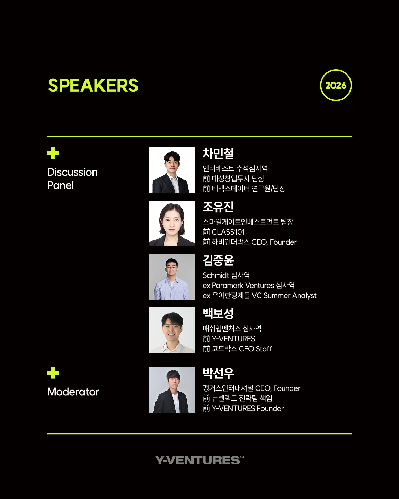

VC 커리어에 관심 있는 연세인 누구나. 2026.06.04 (목) 18:30 ~ 21:30, MARU 180 B1 Event Hall.
Y-VENTURES · VC CAREER SESSION
Y-VENTURES VC Career Session은 연세대학교 구성원이 VC 산업의 인사이트와 네트워킹 기회를 한 자리에서 얻을 수 있도록 마련한 프로그램입니다. 현직 심사역들의 커리어 출발, 요구되는 역량, 투자 관점을 솔직하게 듣고, 네트워킹 리셉션에서 직접 대화로 이어갑니다.

Y-VENTURES는 2025년 6월 VC Career Session을 처음 런칭하여, VC 커리어를 꿈꾸거나 이미 업계에 몸담고 있는 연세인이 교류하는 자리를 만들었습니다. 패널로는 낭만투자파트너스, 크릿벤처스, 동문파트너스, Schmidt 심사역들이 참여해 생생한 업계 이야기를 들려주었고, 70명 이상의 참가자가 활발한 교류의 시간을 보냈습니다.